面向未来的
可持续设计
Sustainable Design · 可持续发展概论
设计不只是我们做出什么，
更是我们创造了什么条件。
→ 开始 · 共 — 页 · O 总览
开场
一个人，一片沙漠，和一棵跨越太平洋的树
在讲理论之前，先看一个真实的故事。它同时关于三件事：种树、可持续，以及国际友谊。
视频位 · 殷玉珍与赛考斯的治沙故事
正在检测播放方式……
1985
陕北姑娘殷玉珍嫁到内蒙古乌审旗井背塘，毛乌素沙漠腹地。风沙一刮就是几十天，方圆几十里只有她一户人家。
1986 春
卖掉家里一只羊，换回 600 棵树苗。经风、经霜、经旱，最后活下来的不到 10 棵。
她说
“10 棵能活，100 棵、1000 棵就能活。种！接着种！”——宁肯种树累死，也不叫沙欺负死。
1999.10
在洛阳教英语的美国外教赛考斯（Ronald Sacorski）从电视新闻里看到她的故事，通过波士顿一家机构为她筹到 5000 美元。
2026.08.23
分别 26 年后，两人在鄂尔多斯机场重逢拥抱，一起种下“中美民间友谊树”。
至今
30 多万棵树，7 万亩流沙披上绿衣。她被授予“全国治沙造林英雄”称号。
课堂提问：她做的是“环保”，还是“设计”？如果把这 40 年看成一个系统——树苗、水、资金、人、政策、国际关注——那么哪一个环节最脆弱？
课程概览
可持续设计 的知识地图
本课程由三条主线构成：可持续发展概论提供理论基础，可持续设计的哲学背景回答"为什么"，具体的设计策略回答"怎么做"。
课程模块
理论基础
可持续发展概论
理论基础
可持续设计
哲学背景
可持续发展的哲学背景
策略 01
生命周期设计
策略 02
循环再生设计
策略 03
重复使用与升级再造设计
策略 04
耐久性与情感化设计
策略 05
减量化设计
策略 06
向自然学习的设计
策略 07
产品服务系统设计
策略 08
社会创新设计
策略 09
分布式经济 / 系统经济
授课形式
课堂讲授
概念、历史与理论框架的系统梳理。
课堂活动
现场投票、系统边界实测、模型仿真——把抽象概念变成可以动手验证的东西。
设计实践
围绕选题方向完成一件可持续设计作品。
小组作业
分组调研与汇报，训练系统性的问题识别能力。
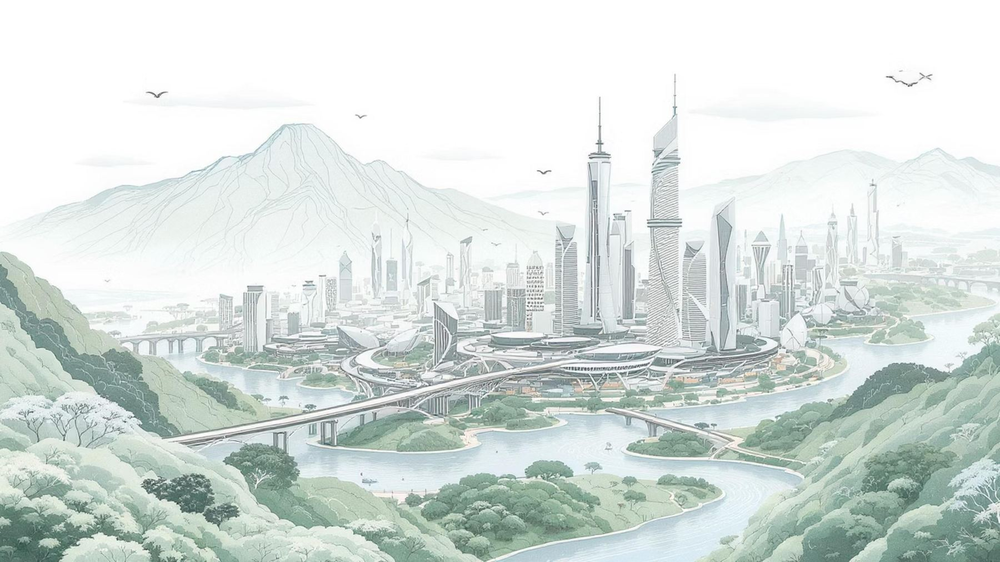
开宗明义
为何要学习可持续设计？
可持续发展不是单纯的环保，而是生态、经济与社会三者之间的长期协调。
设计既可能加速消费和资源消耗，也能通过产品、服务与系统改变消费方式。
设计站在放大器的位置
一件产品被设计出来，就会被生产千万次。设计师的每一个决定，都会被制造规模放大——这既是责任，也是杠杆。
所以问题不是"要不要环保"
而是：当生态、经济、社会三者发生冲突时，你按什么顺序取舍，以及你把这个取舍的代价留给了谁。
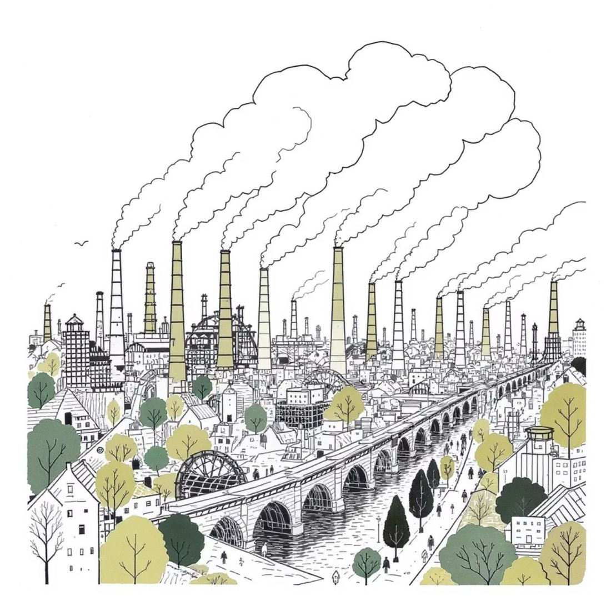
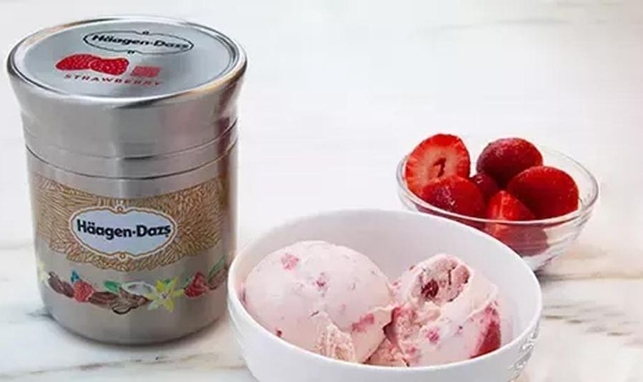
同一种能力，可以造出烟囱，也可以造出闭环。
01 / 设计的本质思考
最基础的创造活动，就是造物
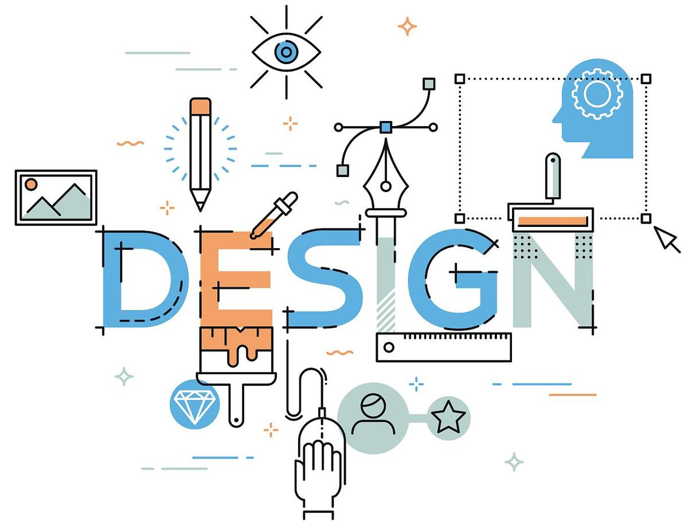
我们向自然学习造物
我们从自然那里获取食物、衣着和居所，而人类也从自然的生物圈中提取原材料，来学习它的自然造物内在逻辑。
传统意义上的"设计"
被认为是把一种计划、规划、设想通过视觉的形式传达出来的活动过程。纵观人类历史，人们通过劳动改造世界、创造文明，其最基础、最主要的创造活动就是造物。
早期中国设计教育的一段弯路
曾在很大程度上把设计与工艺美术混淆或尝试合并，即认为设计是对造物活动进行预先的计划，因此可以把任何造物活动的计划技术和计划过程都理解为设计。
这是一种"基于物"的设计观
本质上，它把设计困在了"物"的层面。而可持续设计要求我们跳出物，去看系统。
02 / 本质思考
可持续设计首先是一种问题识别方式
同一件一次性外卖包装，换一种视角，问题的边界就完全不同。点击切换，看系统图如何展开。
VIEW_01
一个物件
只看造型与功能，解决单点需求，交付一个产品——责任在交付的那一刻结束。
01 / 定义
什么是可持续设计
可持续设计（design for sustainability）源于可持续发展理念，是设计界对经济发展与环境、社会等要素之间关系的理论反思，并在此基础上不断寻求变革与转型的设计实践。
范畴很宽
从本质上讲，任何倡导与践行可持续发展理念的设计教学、设计实践和设计研究活动，都属于可持续设计的范畴。
视角在迁移
其理念演进是从相对孤立的、以物为中心的视角，逐渐向更加系统的、以人为中心的视角转变。
没有定论
它与“绿色设计”“生态设计”以及“社会设计”等概念密切相关，同时又有着自身的特征与系统性。
传统意义上的“设计”，被认为是把一种计划、规划、设想通过视觉的形式传达出来的活动过程。纵观人类历史，人们通过劳动改造世界、创造文明，其最基础、最主要的创造活动就是造物。
03 / 一个身边的例子
问题不只在材料
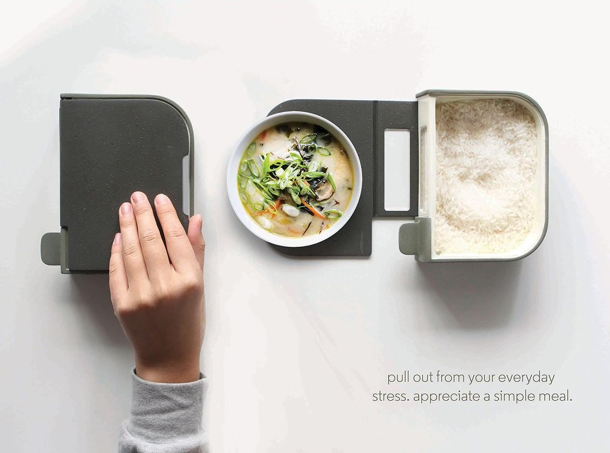
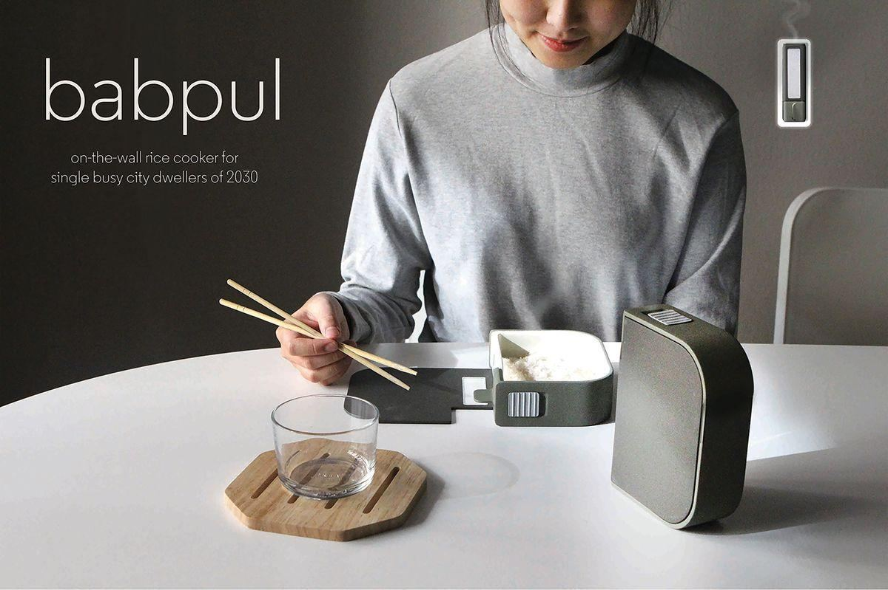
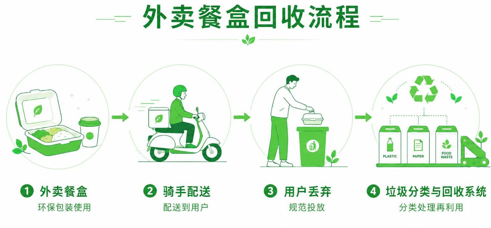
便利的代价
外卖包装让消费更便利，但也把大量一次性塑料、纸、餐具和配送袋推入城市废弃物流。
问题不只在材料
还在平台效率、用户习惯、清洗回收成本和城市管理。换一种“环保材料”并不能解决其中任何一项。
可持续方案长什么样
可能涉及可重复餐盒、押金回收、门店清洗、骑手返程回收和用户激励——这是消费链条的重新组织，而不是一次材料替换。
所以要比什么
需要比较系统总消耗，而不是只比较单个包装是否“环保”。下一页我们就来实测一次。
04 / 动手实测
把边界画在哪里，结论就在哪里翻转
勾选你愿意纳入计算的环节，观察两个方案的相对影响如何变化。
当前系统边界内 · 单次使用相对影响
为什么结论会翻转
一次性方案把负担压在材料与末端处理；可重复方案把它挪到了清洗、逆向物流与用户归还。两者不是“谁更环保”，而是把成本放在系统的哪个位置——这个位置由谁承担，才是设计要回答的问题。
05 / 关键参与者与流动关系
从链条到闭环
可持续设计不再把产品看作终点，而是把用户、材料、服务与回收视作一个持续流动的系统。点击任一环节查看它承担的设计责任。
环节 01
用户 / 需求
线性思维
取材 → 制造 → 使用 → 丢弃。终点是垃圾场，设计责任在交付时结束。
闭环思维
回收不是链条的终点，而是回到起点的通道。设计责任贯穿整个循环。
课堂讨论 · 第一次
你昨天点的那一次外卖，责任边界应该画到哪里？
讨论计时
点击任一“思考角度”展开提示。这一题没有标准答案——能把自己的边界假设说清楚，就是好答案。
案例 A / 可重复包装系统
Loop：把包装从消费品变回资产
TerraCycle / Loop 与品牌合作推出的可归还容器。
案例背景
TerraCycle / Loop 把包装从一次性消费品重新设计为可归还资产。消费者购买商品后归还容器，系统负责收集、清洗、再灌装和再次投放。
运行机制
押金或账户机制降低容器流失；品牌、零售、清洗和物流共同承担循环责任——没有任何一方能单独完成这个闭环。
对应内容
可持续发展、绿色设计与系统性设计。要看到：可持续设计不只是材料替换，而是消费链条的重新组织。
IMPACT_CHECK · 课堂推演
押金、品牌、零售、清洗与物流共同承担循环责任。 这是课堂推演值，用于比较变量关系，而非真实项目评级。
课堂追问
如果归还率低、清洗距离远，这个系统还可持续吗？
案例 B / 剩食平台
Too Good To Go：重新设计最后一小时
案例背景
平台把商家临近售罄或过剩的食品打包为 Surprise Bags，用户低价购买并到店取走，让原本可能被丢弃的食品重新进入消费。
运行机制
它的设计重点不是产品造型，而是信息匹配、时间窗口、价格激励和到店行为。剩食浪费在“卖不出去的最后一小时”被重新设计。
对应内容
社会创新设计与可持续消费。设计对象从“物”变成了“信息流与行为流”。
IMPACT_CHECK · 课堂推演
信息匹配、时间窗口、价格激励与到店行为共同决定成效。 这是课堂推演值，用于比较变量关系，而非真实项目评级。
课堂追问
它解决了食物浪费，还是把库存不确定性转移给了消费者？
店员正在打包一份 Surprise Bag。
案例 C / 可维修硬件
Fairphone：挑战“换新”的默认逻辑
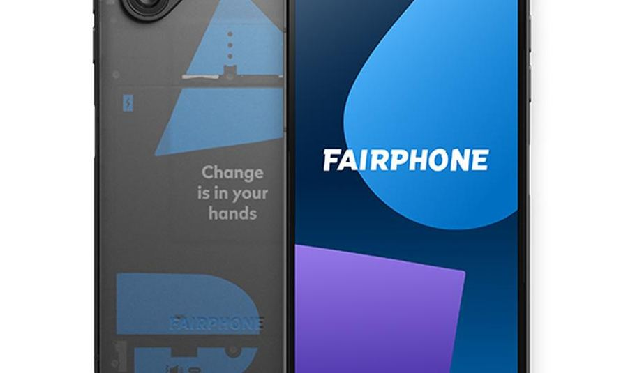
Change is in your hands —— Fairphone 的模块化结构。
案例背景
Fairphone 将维修、替换零件、长期支持和供应链伦理作为手机产品价值的一部分，挑战电子产品频繁换新的默认逻辑。
运行机制
模块化结构让电池、屏幕、摄像头等高故障部件可替换；同时通过零件销售和维修教程降低用户修理门槛。
对应内容
产品设计对资源消耗、社会公平和消费观念的影响。延长一年寿命，往往比更换一种“环保材料”影响更大。
IMPACT_CHECK · 课堂推演
模块化结构与零件可得性共同决定"修不修得起"。 这是课堂推演值，用于比较变量关系，而非真实项目评级。
课堂追问
当可维修性提高成本和厚度时，用户是否愿意为可持续价值买单？
现场投票
三个追问，你站哪一边？
每个案例都有一个没有标准答案的追问。先投票，再请两位同学说说理由。
Loop
如果归还率低、清洗距离远，这个系统还可持续吗？
押金能提高归还率，但清洗和逆向物流会抵消一部分材料优势。
Too Good To Go
它解决了食物浪费，还是把库存不确定性转移给了消费者？
用户拿到的是“盲盒”，商家的备货风险被部分转移了出去。
Fairphone
当可维修性提高成本和厚度时，用户是否愿意为可持续价值买单？
更厚、更贵、性能不占优——但可以用更久。
投票结果保存在本机浏览器，可以在不同班级重复使用；如需清零，点击已选按钮之外的另一个即可改票。
02
设计与自然
Non-linear Evolution
人们将自然逻辑输入机器的同时，
也把技术逻辑带到了生命之中。
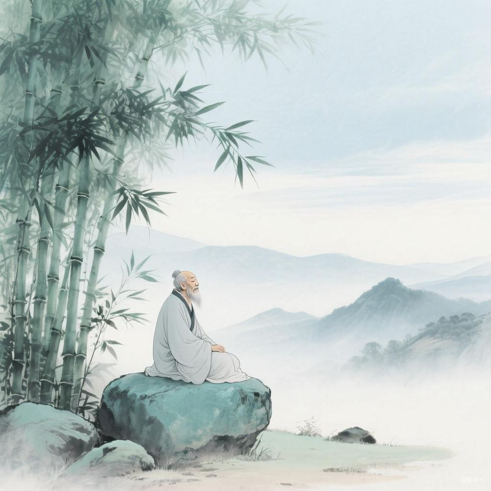
01 / 设计的本质思考
真的是人类主导了杯子吗？
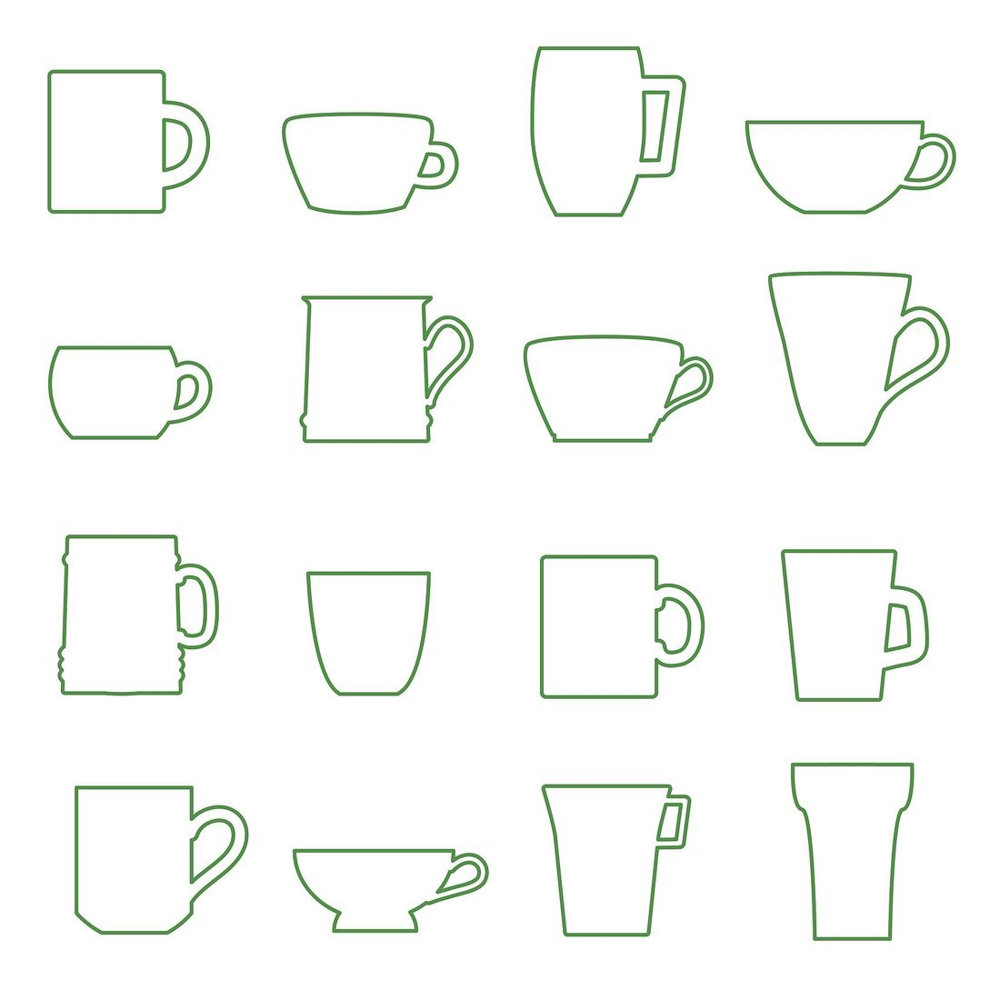
一只普通的杯子
源于容器的需求，源于一种物理形态，在人类的手上创造出无数种外形，由各种材质组成——这种演进被认为是设计。
然而
你又何尝清楚，是否是杯子正利用人类制造工具的能力，进化出了自身的文明？似乎有种莫名的力量在催动着人类向大自然致敬，并学习它的生长逻辑，从而创造新的事物。
重新看造物史
我们曾一直以为设计是人类能力的衍生，是人类掌握世界的方法与力量。然而反观造物设计的历史，人造物和人类其实一样，与我们共同身处在进化之中，他们创造的是另一个维度的文明。
一句提醒
人类是他们的发现者和受益者，但并不是他们的神。
02 / 概念的来源与根系
西方的术语，东方的智慧
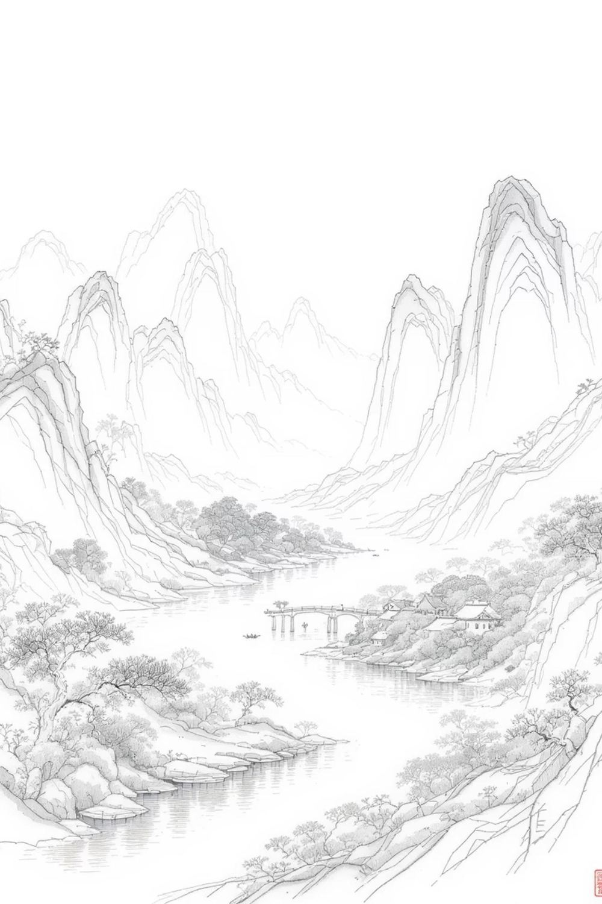
天人合一 · 道法自然 · 因地制宜 · 物尽其用 · 适可而止
术语兴起于西方
“可持续发展”是针对人类社会、经济发展与资源、环境愈演愈烈的冲突而提出的概念。近几十年来，随着经济高速发展，中国也遇到了同样的问题，并且挑战更加严峻。
理念根植于中华文明源头
天人合一、道法自然、因地制宜、物尽其用、适可而止，都是有关人与自然关系的朴素却深刻的认知。
当今学者的课题
如何将西方的可持续发展理念与东方的传统智慧相结合，融汇为当代人类共有的知识体系与精神财富，并服务于可持续社会转型以及人类命运共同体的构建。
三个主要方面
以自然资源的高效利用和良好的生态环境为基础，以经济发展为前提，以谋求社会的全面进步为目标。
02 / 绵延数百年的同一种思想
从“道法自然”到盖亚假说
老子 · 道法自然
“道”作为宇宙万物的本源和运行法则，其核心特性就是顺应万物的自然本性，不强行干预，让一切按照自身的规律发展。这一思想强调人与自然、人与社会的和谐统一，反对违背自然规律的主观妄为，对中国传统文化中的生态观、处世哲学产生了深远影响。
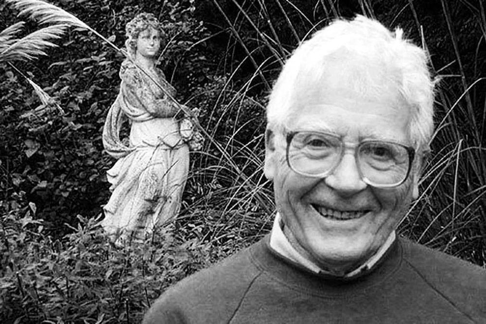
詹姆斯·洛夫洛克 · 盖亚假说
盖亚假说（Gaia Hypothesis）认为地球是一个自我调节的有机整体，所有生命与非生命系统相互作用，共同维持地球环境的稳定。这一类思想从斯宾塞到德日进再到盖亚假说，已经绵延数百年；而老子在上古时期用四个字便概括了它的基本形态。
设计师由此开始思考：如果地球是一个自我调节的系统，那么我们的设计是否也应该遵循这种自组织、自适应的原则？这种思考促使设计从单一的人类中心主义，转向更加整体的生态系统观。
03 / Daisyworld · 1983
雏菊世界模型：没有意图的自我调节
洛夫洛克与沃森提出的计算机模拟模型，用于验证盖亚假说：即使没有有意识的意图，生命群落也可能通过自然选择与环境反馈，维持行星环境的稳定。拖动滑块试试。
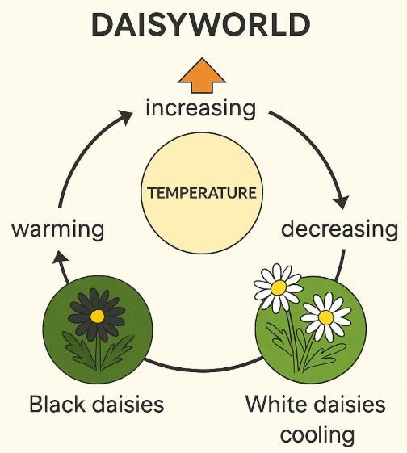
外部增温
白雏菊扩张 → 反射更多光 → 行星降温
外部降温
黑雏菊扩张 → 吸收更多热量 → 行星升温
注意曲线：虚线（无生命行星）随光度线性上升；实线（有雏菊）被“按”在 20℃ 附近一大段——直到光度超出调节范围，生命崩溃，温度才失控跃升。
06 / 新趋势
归纳的成果不是静态的，
而是一种动态的状态
网络信息社会消解了原有空间概念
作为一种趋势，环境设计日新月异的发展，正是让我们在传统物质设计为对象的基础上，去探究设计价值观层面更为深入的内涵动力。
然而，这种归纳不是静态的
这种设计概念特征的归纳成果却不是静态的，而很可能是一种动态的状态——今天成立的定义，明天可能就需要被重新讨论。
对我们意味着什么
不要指望背下一个"可持续设计"的标准答案。要掌握的是识别问题的方式：边界在哪里、时间尺度多长、谁承担代价。
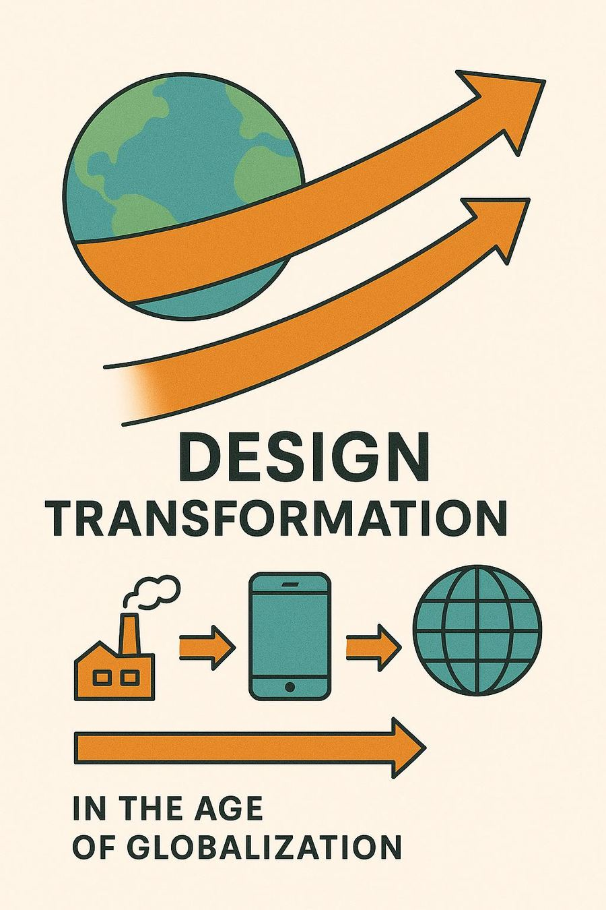
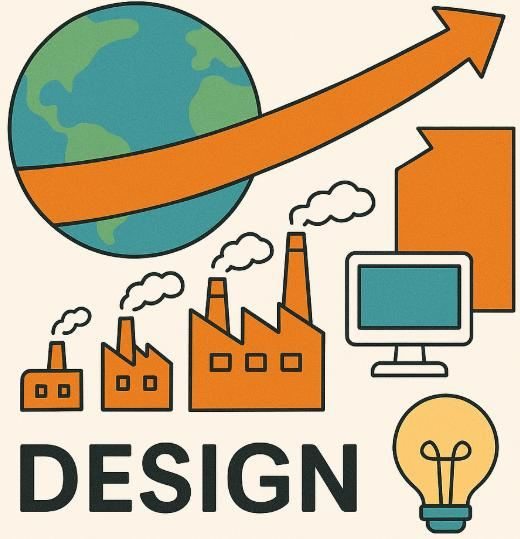
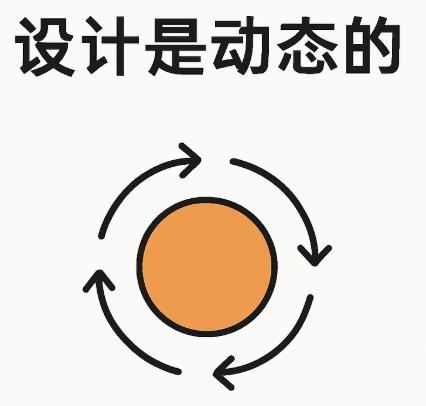
04 / 非线性科学
微小的因，无尽的复杂
非线性科学认为，在许多真实系统中，微小的输入变化可能导致巨大结果，且整体特性不等于局部特性的简单和。下图两条轨迹规则完全相同，只是初值差了一点点。
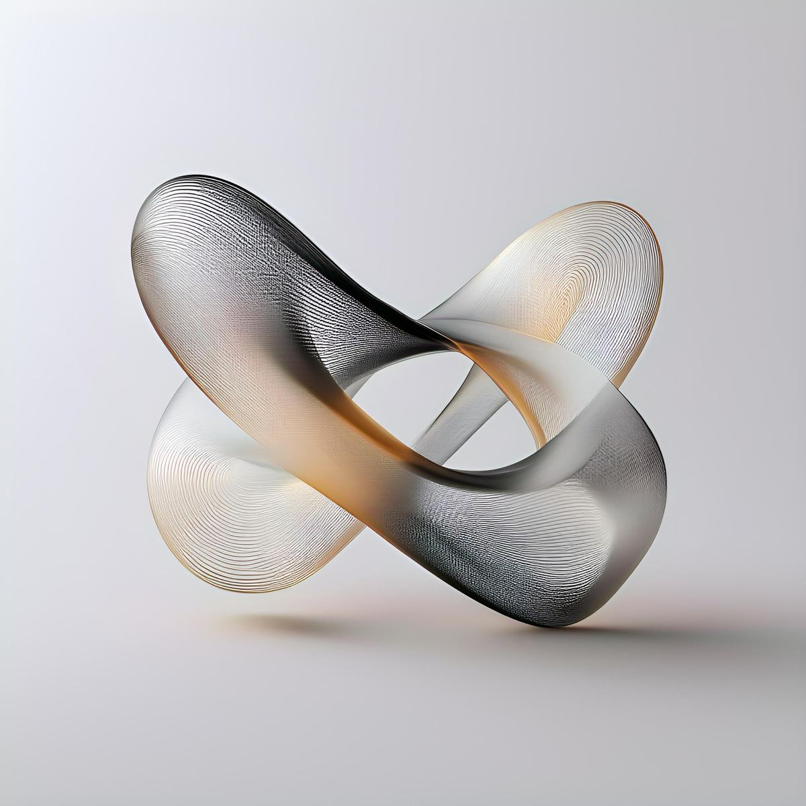
什么是混沌
混沌（Chaos）指确定性系统产生的一种对初始条件具有敏感依赖性的回复性非周期运动。它和随机运动一样不可预测，但混沌运动在动力学上是确定的，其不可预测性来源于运动的不稳定性。
对进化的启示
混沌理论揭示了从简单到复杂之间的关系：进化所遵循的不是常规的因果论，简单的因最终产生的，可能是无尽的复杂。
对设计的要求
非线性设计不仅仅是一种连续流动状的形体，更应当明确这种形体作为结果，是对周边自然环境因素的分析与对自然有机体形成逻辑的借鉴。正因为各种影响因子的复杂性，才形成动态的整体“过程设计”所产生的不规则形体。
05 / 1972 · 洛伦兹
巴西蝴蝶的翅膀，与得州的龙卷风
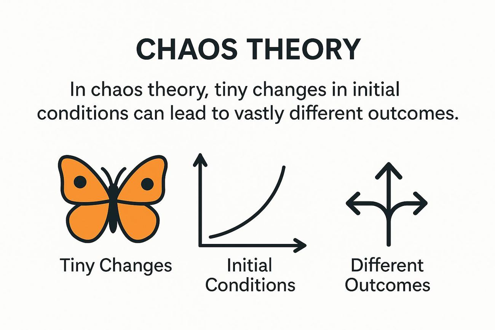
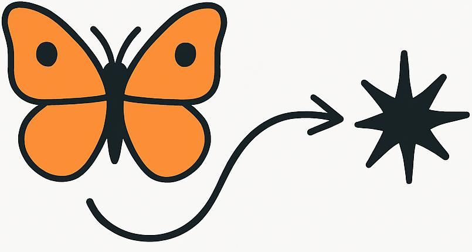
在巴西一只蝴蝶翅膀的拍打，能在美国得克萨斯州产生一场龙卷风。E.N. 洛伦兹，《蝴蝶效应》，1972 年 12 月 29 日，美国科学发展学会第 139 次会议
洛伦兹由此提出了天气的不可准确预报性。这个著名的例子解释了非线性系统中微小变化如何导致巨大后果，展示了复杂系统中因果关系的非线性特性。
混沌理论揭示：进化这种不可测的特性，使得人工对进化的“控制”笼罩上一层浓雾——如何解开这个答案，是人类在未来获得技术飞跃必须要逾越的门槛。
06 / 网状发展结构
世界不再是线性的一维视域
| 维度 | 结构主义 | 后结构主义 |
|---|---|---|
| 时间背景 | 20 世纪初 — 中期 | 20 世纪 60 年代后 |
| 核心观点 | 世界有可分析的稳定结构 | 结构是流动的、开放的 |
| 意义来源 | 元素在整体系统中的关系 | 意义不断被重构，没有终极解释 |
| 研究目标 | 揭示普遍的结构规律 | 揭示意义生产的过程与差异 |
| 态度 | 强调科学性与客观性 | 质疑确定性，强调多样性与解构 |
全球化浪潮下，我们面临的是一个消解地域、消解专业化领域、消解本本主义后即将或正在产生剧变的时代。设计发展的本质，是每一次产业革命带来的升级对“设计”概念的重新定义及其研究方法的一次反思或批判。当代设计正在形成不断在推动中趋于自我完善的网状发展结构，超越了传统的线性思维模式。
课堂讨论 · 第三次
如果地球是一个会自我调节的系统，设计师还需要做什么？
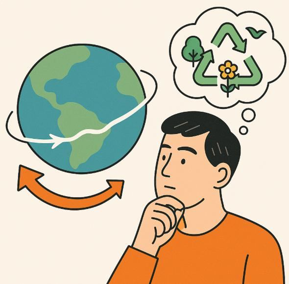
讨论计时
03
可持续发展
Sustainable Development
探索人类与自然
和谐共生的未来之路。
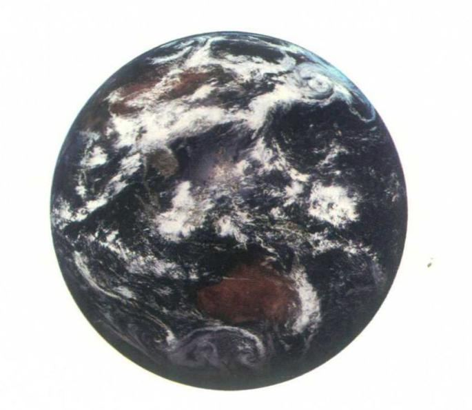
01 / 1987 · 布伦特兰报告
沿用至今的那一句定义
可持续发展是既能满足当代人的需要，又不对后代人满足其需要的能力构成危害的发展。《我们共同的未来》（布伦特兰报告），1987 年
原则一
公平性
当代人与后代人之间的公平，以及当代不同群体之间的公平。
原则二
持续性
发展必须在生态环境承载能力范围内进行。
原则三
共同性
全球各国必须共同努力、协调行动。
报告强调两个基本观点：一是人类要发展，尤其是穷人要发展；二是发展有限度，不能危及后代人的生存和发展。
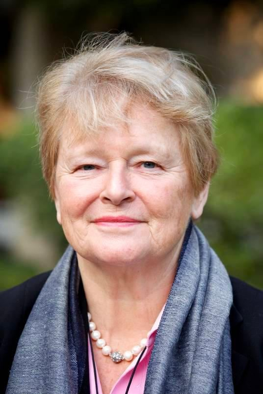
格罗·哈莱姆·布伦特兰——历任挪威首相、世界卫生组织总干事。1984 年担任联合国环境与发展委员会主席期间主持起草该报告，推动可持续发展理念纳入 1992 年里约峰会。
08 / SDGs
17 个目标，一份共同的议程
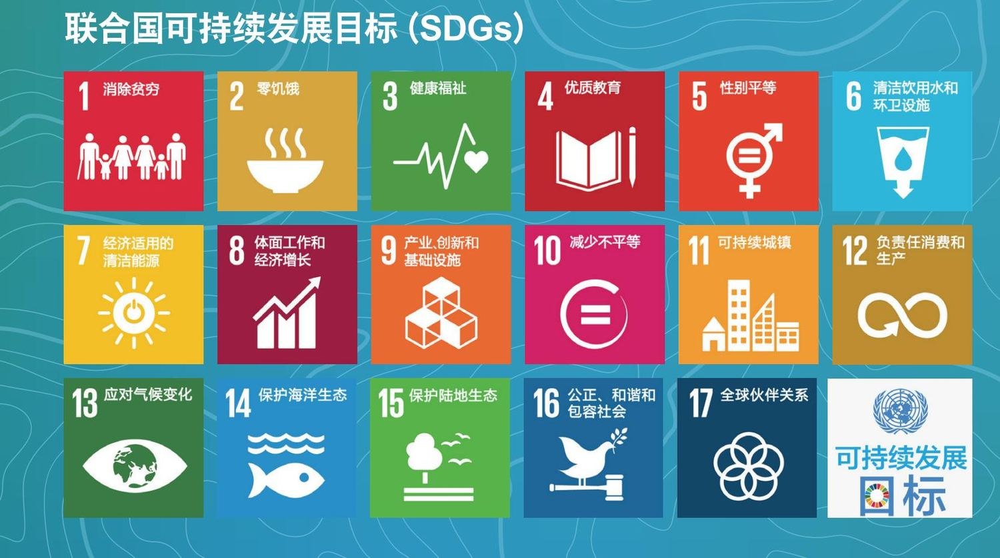
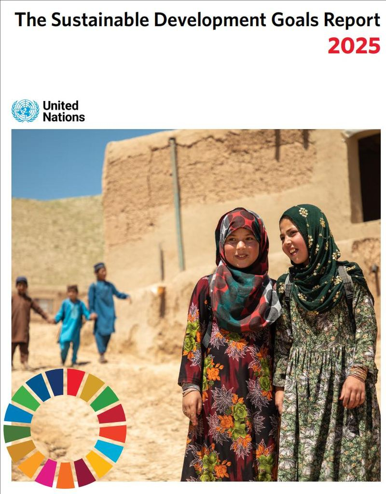
可持续发展的多元观点
激进环保主义
将可持续发展等同于激进的环境保护，部分欧洲学者甚至提出"去发展"（degrowth），以最大限度地停止人类活动对自然环境的影响。
社会公平视角
强调可持续发展的社会性，关注低收入群体的基本生存和福祉，质疑不加"区别责任"的环保法规，以及不符合"公平"原则的经济发展。
中国视角
东部沿海接近中等发达国家水平，消费主义对年轻一代有巨大吸引力；同时刚完成脱贫攻坚，仍有大量中低收入人群，城乡差距巨大；气候异常、生态危机、环境污染迫在眉睫。
可持续发展包括三个主要方面：以自然资源的高效利用和良好的生态环境为基础，以经济发展为前提，以谋求社会的全面进步为目标。
这些不同视角迫使我们努力寻求一条符合中国国情的可持续发展之路。
03 / 人与自然的互动 · 阶段一
走出非洲，就已经在改变生态
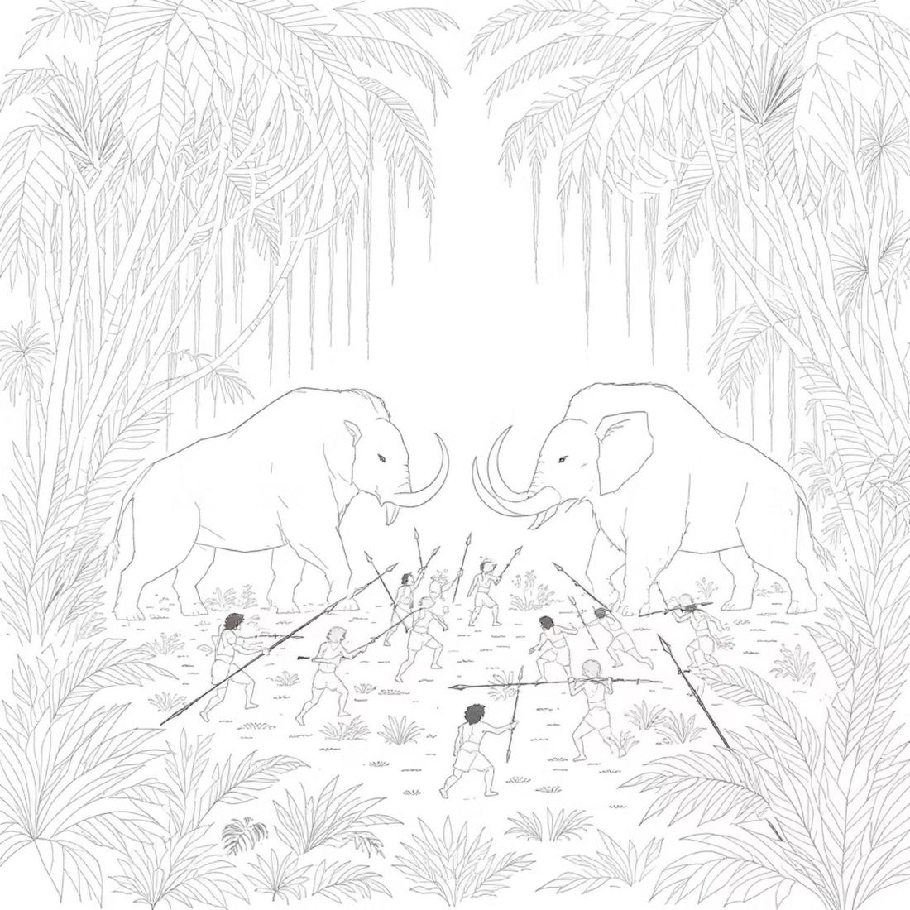
澳大利亚和美洲的生物大灭绝，其时间与智人到达的时间相吻合。
人类并非天然的统治者
在生态系统中，人类因为存在着大量天敌，也不居于食物链顶端。但人类通过群居与合作发展出独特的社群，并以集体学习的形式发展出文化。
靠文化而非进化取胜
人类通过文化，而非单纯的自然进化，更快、更好地适应了环境，逐渐在生物圈中占据了主导地位。
约 20 万年前走出非洲
由于能够使用工具和火，并以群体形式生活，人类从一开始就显示出对环境的巨大影响力。
03 / 人与自然的互动 · 阶段二
局部已经很严重，整体仍微不足道
进入农业社会后，人类通过驯化动植物提高了能量转化效率，社会与文化复杂性不断提高，人口开始缓慢增长。三个文明核心区，留下了同一种教训。
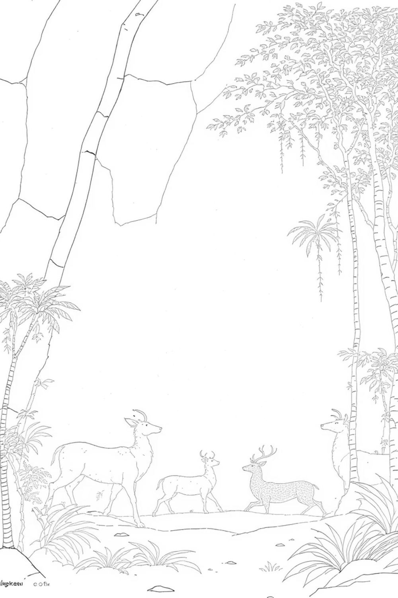
两河流域
土地变白
公元前 2000 年出现“土地变白”的报告，显示过度耕种带来的盐碱化。到公元前 1800 年，粮食产量只有早期的 1/3，苏美尔农业随之崩溃。
地中海地区
从混合林到橄榄
自然植被曾是橡树、山毛榉和松树等混合林，如今却以橄榄、葡萄和香草闻名——这正是砍伐森林、过度放牧与耕种导致土壤肥力下降的结果。
中国黄河流域
《诗经》里的森林
曾记载黄土高原南部野鹿成群、虎豹出没、森林繁茂。但人口增长、大兴土木、毁林开荒，原始植被不断退化——黄河的泥沙正是上游植被破坏后土地被侵蚀的结果。
尽管如此，当时人类对自然环境的破坏还是有限的。即使在农业生产力最发达的时代和地区，人类造成的环境影响，即使局部已经很严重，从整体而言也是微不足道的。
03 / 人与自然的互动 · 阶段三
与其说是“人类中心主义”，
不如说是“资本中心主义”
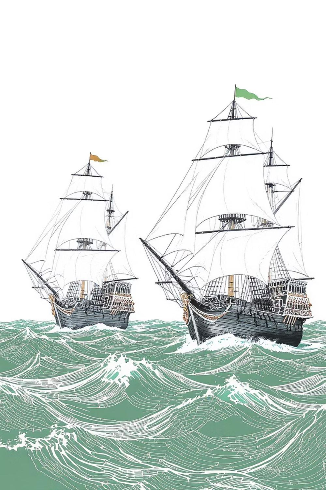
1492 年哥伦布开始东方之旅，“大航海时代”拉开序幕。
一场巨大的一体化
西班牙殖民者到达美洲后，开拓荒地、烧毁森林、灭绝原住民，大面积种植甘蔗、烟草、玉米等经济作物，以前所未有的速度改变大陆的原生态系统。
农业系统的长期破坏
为了快速获得利润，殖民者放弃了传统农业的间种、轮作、休耕等技术，随之带来土壤退化、地力耗尽、病虫害滋生，最终导致生态崩溃。
阻断了自给自足的文明
无论北极还是热带，人类原本以自然为根基、被自然所约束，形成了高度发达的自给自足文明。西欧的全球扩张阻断了这一进程。
代价的分配
殖民国家快速积累财富，率先进入高能量的现代社会，而被奴役的人民与土地至今未能消化这一后果。少部分人享受了发展的成果，全体人类承受了环境破坏的代价。
03 / 人与自然的互动 · 阶段四
最先进的经济，最严重的污染
1952 年 12 月 5 日，一股厚厚的黄色云层降落在伦敦——煤炭燃烧产生的二氧化硫和二氧化氮与寒冷雾气反应，使烟雾变得有毒。
1780—1880 的一百年
蒸汽机使煤炭开采量迅速上升、价格下降，带动纺织、冶炼、交通快速发展。英国建立了世界上技术最先进、最有活力和最繁荣的经济，但也导致了英国历史上最严重的大气污染。
1858 · 伦敦大恶臭
生活污水与工业废水都直接排放入河，造成严重的河流污染。1872 年，英国人罗伯特·史密斯第一次创造了“酸雨”这个词汇。
直接后果：疾病流行
1831—1866 年，英国爆发了四次大规模霍乱。
03 / 人与自然的互动 · 阶段五
大加速：危机第一次直接进入客厅
“二战”之后，严重的生态破坏与环境污染问题频频进入公众视野。随着无线电技术和家用电视机的普及，这些事件直接呈现在公众面前，激起了强烈的社会反响。
| 年份 | 事件 | 后果 |
|---|---|---|
| 1952 | 伦敦毒雾事件 | 4 天内 4000 多人死亡 |
| 1956 | 日本熊本水俣病 | 由工业废水中的甲基汞引起 |
| 1969 | 美国圣巴巴拉海峡漏油 | 污染了数百公里海岸线 |
| 1984 | 印度博帕尔化工厂爆炸 | 57.5 万人丧命，20 万人残疾 |
| 1986 | 切尔诺贝利核泄漏 | 造成大范围放射性污染 |
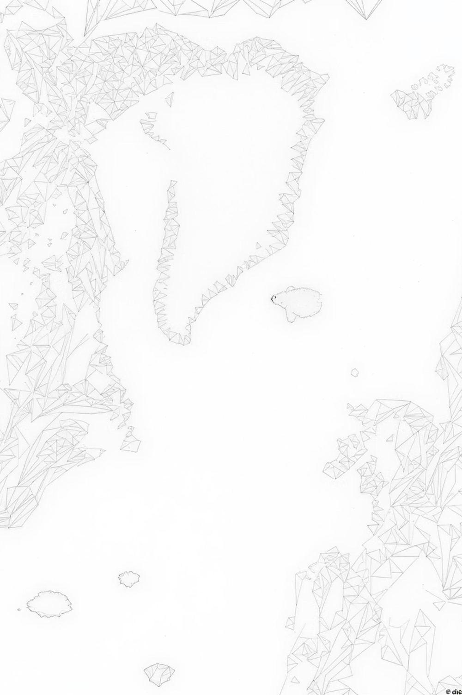
受气候变暖影响，北半球春天的解冻期比 150 年前提前了 9 天，秋天霜冻开始时间晚了约 10 天。这一切将对全球环境产生不可逆转的影响：气候灾难频发、海平面上升、瘟疫流行、粮食危机、动植物种群迁徙或灭绝。
04 / 1962 · 环保运动的奠基石
《寂静的春天》与环保意识的觉醒
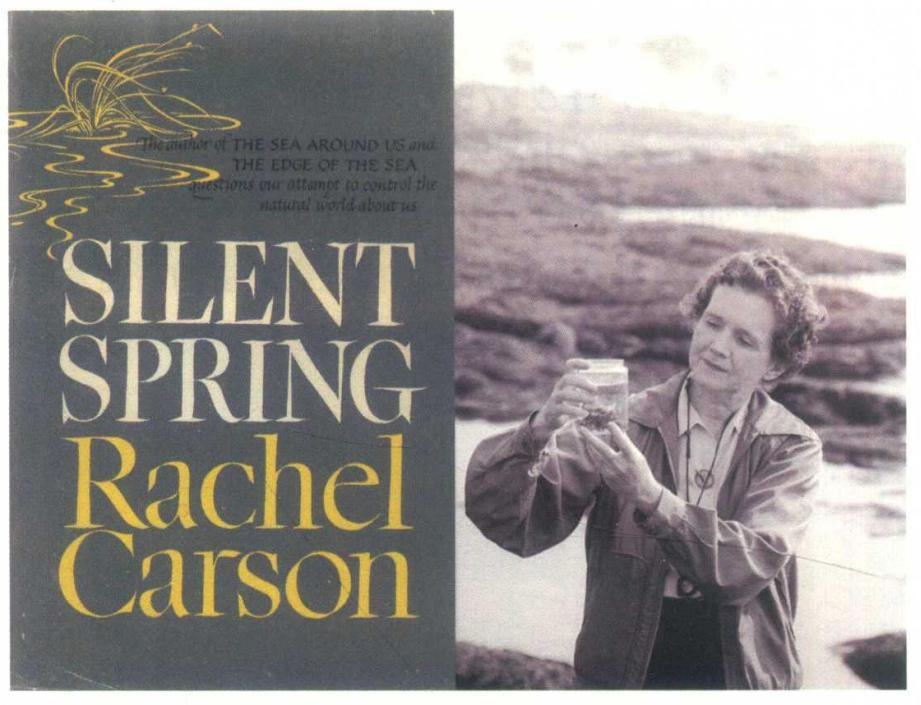
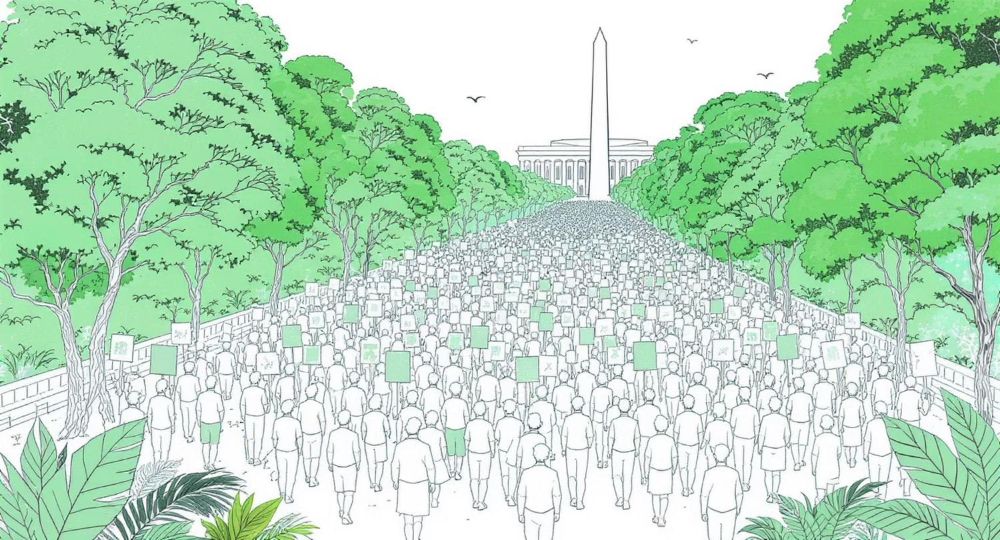
1962 · 一本书
该书首次反思了因过度使用化学农药与肥料而导致的环境污染、生态破坏，最终可能给人类带来重大灾难。它被认为是世界环保运动的奠基石。
1969 · 立法跟进
美国国会通过《国家环境政策法》并成立环境保护局，之后陆续通过清洁空气法和清洁水法。
1970 · 地球日
4 月 22 日，参议员纳尔逊发起“地球日”活动，当天有超过 2000 万人在纽约、华盛顿、旧金山等地游行和集会。
为什么是这个年代
同时期的反殖民、反越战、女权主义浪潮以及民权运动，带动了价值观的相互影响与传播，促使社会各界对环境议题产生了极高的关注度。1971 年“绿色和平”成立，环保运动进入高潮。
05 / 1972 · 系统思考的丰碑
《增长的极限》与系统思考
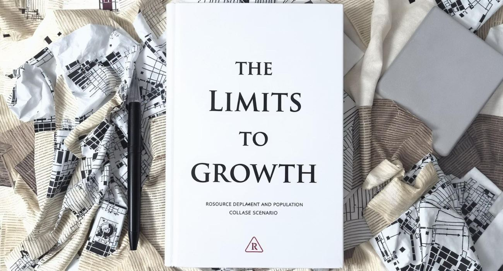
模型说了什么
模型把人口、工业产出、粮食、资源存量、污染五个变量放进同一个反馈系统。结论不是"某一年会耗尽"，而是：只要增长是指数的，而地球是有限的，崩溃就只是时间问题——除非主动改变增长方式。
罗马俱乐部的模型
该书利用系统理论和计算机模型，预测了人类从 1972 年到 2100 年的发展轨迹。
指数增长的危险
指出随着指数增长的资源消耗和污染排放，人类将很快冲破地球环境的安全界限，造成粮食生产和世界人口的锐减。
引发全球辩论
其观点引发了社会对未来人类发展的“乐观派”与“悲观派”的大争论，加深了人们对未来人类命运与发展道路的理解和认识。
历史性意义
它被誉为人类发展问题研究的一块丰碑，首次将系统思考应用于全球环境问题——这也正是可持续设计方法论的源头之一。
06 / 从斯德哥尔摩到里约
概念是怎样一步步被确立的
全球进程、中国探索与设计学科三条线索并行推进。点选下方标签可以只看其中一条。
07 / 1992 · 全球共识
里约地球峰会与三重底线
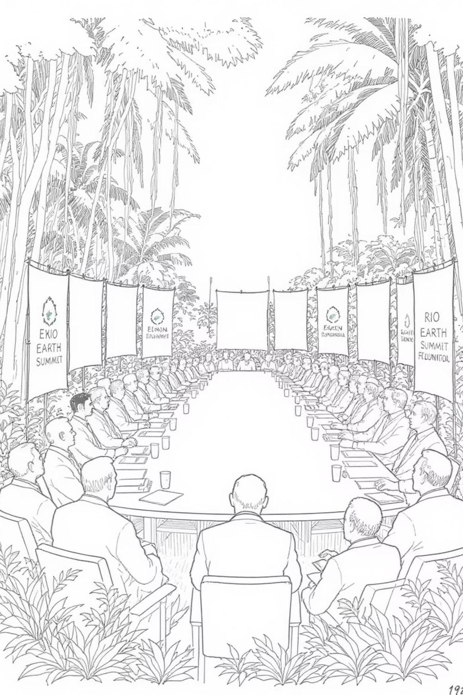
1992 年，联合国环境与发展会议（UNCED）在巴西里约热内卢举行。
《里约宣言》
第一次将可持续发展视为一项人类“权利”，明确了环境与发展之间互相冲突又相互依存的关系，同时明确了各国“共同但有差别的责任”。
三份重要文件
《21 世纪议程》（Agenda 21）高度凝聚了人类对可持续发展理论的认识；同时提出了《联合国气候变化框架公约》（UNFCCC）和《生物多样性公约》（CBD）。
走出联合国
从 90 年代开始，讨论逐渐超越联合国的号召，走向研究机构、大学，甚至工商和金融机构。世界银行指出：健康的环境对于可持续发展和健康的经济至关重要。
三重底线（TBL）
John Elkington 提出经济底线、环境底线、社会底线。他认为：一个可持续发展的企业不应从人类的痛苦中获利，也不应采取加剧社会问题的措施。
09 / 中国探索
四个阶段，一条本土道路
中国承担了人口大国与经济大国的基本责任。从 1972 年首届人类环境会议至今，大致经历了四个阶段。
阶段一 · 1972—1989
明确环保战略，推进环境立法
1972 参加首次“人类环境会议”
1973 第一次全国环境保护会议，通过《关于保护和改善环境的若干规定》，确定“保护环境、造福人民”方针
1978 环境保护首次写入宪法
1989 通过《中华人民共和国环境保护法》
阶段二 · 1992—1997
确立可持续发展理念
1992 参加里约大会，承诺履行《21 世纪议程》
1994 发布《中国 21 世纪议程》
1995 正式将可持续发展战略写入“九五”计划
1997 十五大强调“在现代化建设中必须实施可持续发展战略”
阶段三 · 2003—2010
生态文明的科学发展观
2003 十六届三中全会提出“坚持以人为本，树立全面、协调、可持续的发展观”
2005 提出“生态文明”概念；十七大将其列入全面建设小康社会目标
2010 “十二五”规划建议提出绿色、低碳发展理念
阶段四 · 2012 至今
最大包容性的美丽中国建设战略
2012 十八大要求把生态文明建设融入经济、政治、文化、社会建设的各方面和全过程，强调“尊重自然、顺应自然、保护自然”
2017 十九大把“坚持人与自然和谐共生”作为基本方略之一
这一创新过程既有对世界先进经验的学习借鉴，也兼顾了中国具体的发展阶段与社会经济背景，是对可持续发展内涵的不断充实和拓展，也为构建“人类命运共同体”作出了积极探索。
01 / 三大维度
兼顾三者，否则只是政治口号
自然的限制也是一种保护，人与自然是一体的。点击三角形任一顶点，查看该维度关心什么、以及它与另外两者的张力。
DIMENSION_01
PLANET
环境维度
02 / 环境维度 · 输入端
我们正在透支一个星球
从生态系统的角度看，人类从自然界获取能量与物质（输入），同时将转化后的废气、废水、废物排放到自然界（输出）。环境维度的可持续性，就从这两个角度来理解。
土地资源
24% 的陆地已被开垦
过去 60 年全球开垦的土地比 18、19 世纪的总和还要多。沼泽、森林、草原被开垦利用，导致自然生境的快速消失。
城市扩张
人造环境不断扩大
群居地从村庄变为小镇、都市，原生自然不断减小，以至于偶尔的野猪、大象进入城市，都会被视为新闻而广泛报道。
矿产开发
向地表以下不断发掘
开发煤炭、石油、金属、稀有矿藏，都需要通过大规模协作和先进技术装备，向地表以下、海洋深处、山体内部不断发掘。
生物多样性
生境的根本性破坏
高强度资源开发带来的最大负外部性。大量动植物失去栖息地，数量减少或种群灭绝，破坏了生态系统的平衡。
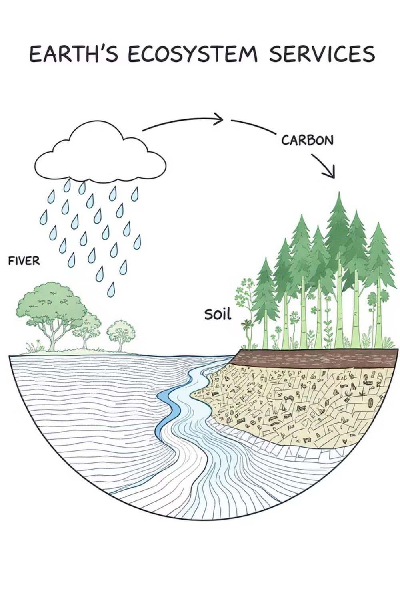
这一切都意味着，我们留给子孙后代的很可能是这样一个家园：一个资源匮乏、物种单一、缺乏活力的星球。
03 / 环境维度 · 输出端
以前所未有的速度变暖
2021 年 8 月《IPCC 第六次评估报告》第一工作组报告：人类活动致使气候以前所未有的速度变暖。
气候变化
目前全球地表平均温度较工业化前高出约 1℃。从未来 20 年的平均温度变化预估来看，全球温升预计将达到或超过 1.5℃。
极端天气
全球持续变暖将进一步加剧全球水循环，包括其变率、全球季风降水以及干湿事件的强度。由此导致更强的降雨和洪水，在许多地区则意味着更严重的干旱。
健康影响
伦敦毒雾、切尔诺贝利核泄漏、日本水俣病，都对成千上万普通人的健康造成了长期影响，尤其是缺乏保障、无法逃离污染区域的底层民众。
更严重的是长期破坏
环境污染对生物圈的长期破坏——被污染过后的水体和土壤，往往要经历极长的时间才能恢复正常值。
04 / 社会维度
经济发达，不必然带来社会公平
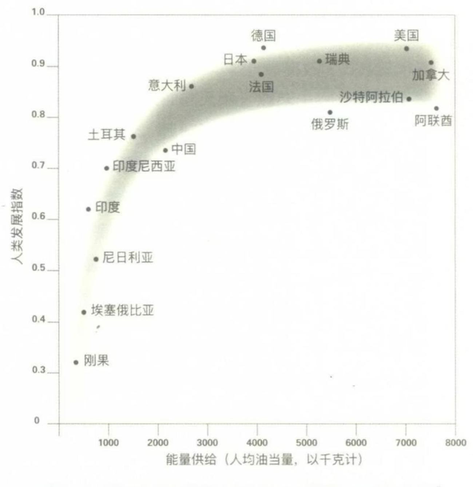
《能量与文明》作者斯米尔：在较低的发展阶段，能量使用与人类发展指数才有线性关系；当发展到一定阶段之后，更大的能量投入却不能带来更高的社会发展。
核心是“公平原则”
这颗星球上的每个人都拥有获得生存与发展的空间与资源的权利。在尊重基本权利与文化多样性基础上，创造平等的机会；促进建立一个民主、包容、团结、健康、安全和公平的社会。
HDI：修正单一 GDP
联合国 1990 年提出人类发展指数，由预期寿命、教育水平、人均 GDP 三部分构成，用以修正之前以单一 GDP 评估发展进程的方法。
HDI 的缺口
它将社会发展与经济发展关联，但缺乏对生态成本的计算。因此有学者提出更精确的定义：在生态环境的承载能力以内实现较高的福利水平。
代际公平 × 代内公平
作为“托管人”，我们有义务为子孙后代保护好自然资源与文化资源；同时，当代一部分人的发展不能以损害另一部分人的发展为代价。
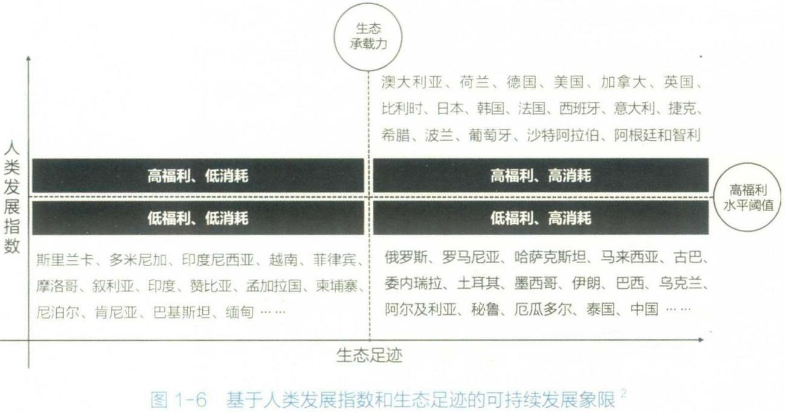
在发展水平十分接近的情况下，相对于德国和法国，美国的能量消耗却要高出近一倍。显然，这样的社会经济模式是不可持续的。
05 / 福利水平 × 自然消耗
社会发展的四种模式
以人类发展指数衡量福利水平，以生态足迹衡量自然消耗，可以界定出四个象限。点击象限或国家查看说明。
象限说明
图中仅澳大利亚、美国、加拿大三点标注了课件给出的生态足迹倍数，其余象限为模式说明，点位不代表精确坐标。如果全球居民都像他们一样生活，至少需要 4~5 个地球才能满足人类的自然消耗需求。
05
设计的觉醒
The Awakening of Design
设计始终是连通生产、流通
与消费之间的重要桥梁。
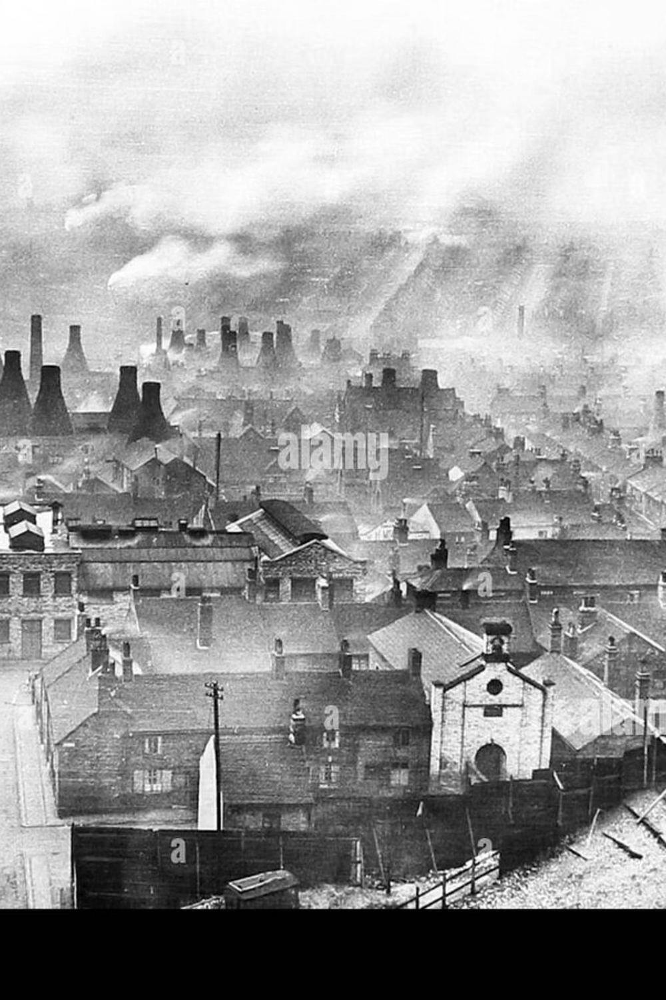
01 / 设计的觉醒
设计始终是连通生产、
流通与消费的桥梁
工业革命后，手工业时代的精湛技艺随贵族专享的奢华消费品一起逐渐消失。
工业革命之后
手工业时代的精湛技艺逐渐消失，取而代之的是大批量生产、略显冷漠粗糙但可惠及普罗大众的工业化产品。
工艺美术运动
约翰·拉斯金和威廉·莫里斯力图让设计更富有艺术感，复兴面临失传的手工艺传统。他们还肩负一项使命：通过更有创造力的工作，恢复工人“劳动的喜悦”。
包豪斯（20 世纪初）
在充分肯定和接受工业化运动的前提下，融合技术与艺术，将设计回归到以“人本”为出发点的“功能主义”内涵，为现代设计学科与行业奠定了基础。
05 / 词汇上的联姻
“可持续性”与“设计”，始于 90 年代中期
尽管人类在设计发展历程中体现朴素的可持续思想由来已久，但这两个词汇正式结合，只有三十年。
1994 · 英国开放大学
超越绿色设计
Emma Dewberry 与 Philip Goggin 认为，相对于绿色设计与生态设计，可持续设计要面对“产品”以外更加复杂的社会、经济以及道德等条件的制约。
1995 · 英国萨里艺术设计学院
成立“可持续设计中心”
并开设可持续设计硕士课程。他们提出，可持续设计是针对我们创造、使用以及处理产品的“系统”进行分析与改变（优化）。
21 世纪初 · 米兰理工大学
Ezio Manzini：产品服务系统
通过整合“产品及服务”以构建“可持续的解决方案”，以“成果”和“效益”去取代物质产品的消耗。
可持续设计是个极具包容性的概念：它继承了绿色设计与生态设计的基本理念与方法，但不仅强调保护生态环境，而是提倡兼顾环境效益、社会效益、使用者需求与企业发展的系统创新策略。
02 / 20 世纪 20 年代起
设计助力资本，共同缔造“消费主义”
商业设计走上舞台
20 世纪 20 年代，美国进入经济高速发展阶段，“商业设计”随之走向历史舞台，并助力资本，共同缔造了遍及全球的“消费主义”浪潮。
运转的方式
设计在遵循“资本逻辑”的前提下，不断挖掘人的潜在欲望，推出花样翻新的商品，在无孔不入的营销之下，维系“消费社会”的运转和繁荣。
进入历史中央
1949 年雷蒙德·罗维登上《时代周刊》封面，标志着设计进入历史舞台的中央地带，并在社会、经济发展中扮演重要角色。
但是——
长期以来，服务于产业的设计一直充当着“手段”的角色，始终是企业赢利的工具。设计师的职责似乎只限于创造外观炫目的产品以促进销售，而对环境与社会问题视而不见。
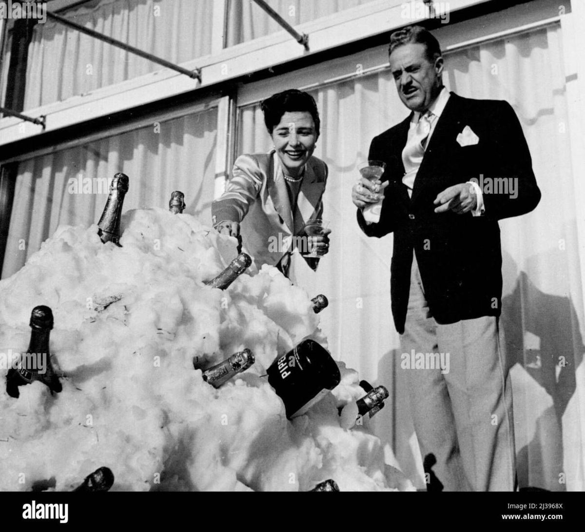
商业设计的黄金年代：设计成为刺激消费的引擎。
03 / 1948 年起
从“形式追随功能”
到“风格追随销量”
从“有计划废止”到市场上争奇斗艳的产品“形式创新”。
本应该以解决问题为其职能的“设计”，现如今反而成为制造问题或麻烦的一分子。内森·谢卓夫《设计反思：可持续设计策略与实践》
设计被指控
设计一直是刺激人们潜在欲望，塑造不可持续的幸福观、消费观和生活方式的直接操纵者，因此被指责为助长消费主义、加剧资源消耗与垃圾产出的罪魁祸首之一。
1948 · 考夫曼的批评
美国 MOMA 博物馆的埃德加·考夫曼激烈批评当时的设计行业，是把教科书中的“形式追随功能”篡改为“风格追随销量”。
于是设计界开始反思
在这样的大背景下，设计界开始认真反思自身应有的职能，也触发了可持续设计相关理念的产生。
04 / 可持续设计的先驱
维克多·帕帕奈克与“设计伦理”
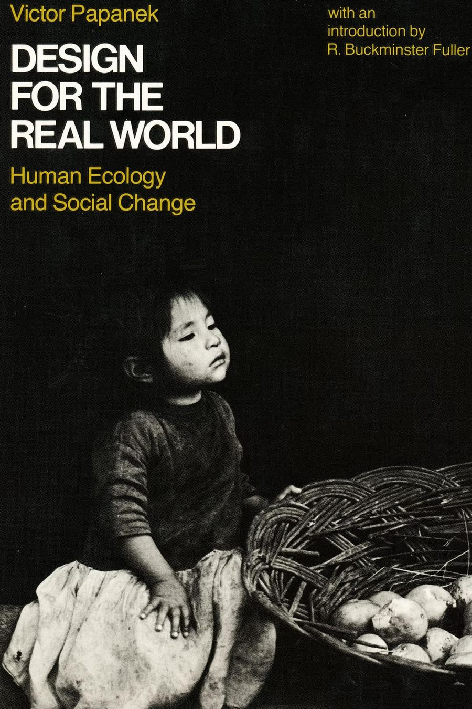
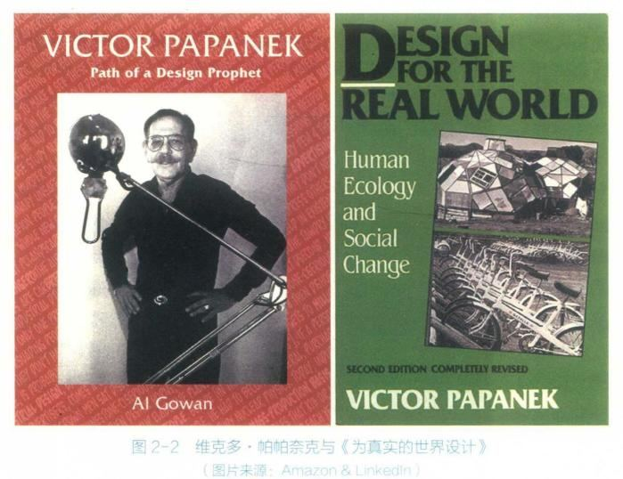
《为真实的世界设计》曾遭 12 家出版社拒绝，1970 年首先在瑞典出版，1971 年才在美国出版英文版。此书被译成多种语言，多次修订再版，影响深远。
不合时宜的声音
20 世纪 60 年代末到 70 年代初，美国经济高速发展，工业界与设计界都对未来充满信心，而帕帕奈克却不合时宜地提出了“设计伦理”的概念。
毫不妥协的批判
他对当时美国消费主义泛滥、城市能耗与污染大幅上升进行了毫不妥协的批判，主张设计师应该担负起对社会和生态变化的责任。
扩展设计师的职责
他鼓励对社会问题、第三世界、底层人民投入关注，同时将环境与自然资源的保护纳入设计师的职责范畴，提出工业设计应当自我限制。
留下了什么
他终其一生倡导的“有限资源论”，为后来掀起的“绿色设计运动”提供了理论基础，令之后几代设计师认识到自己应承担的社会及伦理价值。
课堂讨论 · 第二次
设计师有没有权利拒绝一个“卖得好但不可持续”的项目？
讨论计时
建议请 2—3 位同学发言，正反两方各一位。争议本身就是教学内容——可持续发展在学术界同样没有统一答案。
课后作业
生活中有哪些
“不可持续“的产品或现象？
具体要求
1. 寻找 3—5 种“不可持续”的产品或现象；
2. 解释“不可持续”表现在哪里。
可以从这些角度切入
材料（是否可回收、是否混合材质）· 生命周期（使用时长 vs 存在时长）· 系统关系（谁在为它的末端付费）· 责任边界（生产者、平台、用户、城市）· 用户行为（设计是否鼓励了浪费）
避免这样写
“塑料袋不环保，因为塑料不可降解”——这只说了材料。请至少说清一条系统关系：它为什么被大量使用？谁从中获益？改变它需要哪些环节同时配合？
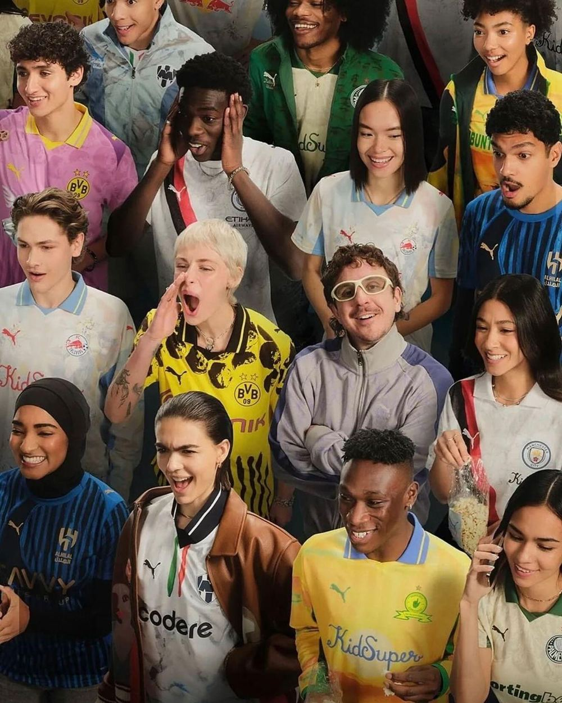
提示：从你今天用过、然后丢掉的东西开始想。
课程设计
四个可选主题方向
方向 01
艺术疗愈设计
为抑郁症、孤独症、狂躁症、失亲者、失恋者、失友者，打开心灵枷锁，重回正常生活。
传统绘画 / 现代装置艺术 / 数字艺术 / AI 生成艺术 / 空间艺术
方向 02
创意文具与文件管理
围绕办公或学习场景中的文具使用、资料整理、文件归档、会议记录、桌面收纳等需求展开。
低碳材料 / 模块化结构 / 可持续使用 / 高效体验
方向 03
时尚生活设计
时尚生活方式是“时间”与“崇尚”的相加。从国潮崛起到可持续实践，从虚拟衣橱到慢生活哲学，核心在于通过服装、服饰、珠宝、配饰、虚拟时尚等媒介，实现功能需求、美学表达与文化认同的统一。
服装 / 服饰 / 珠宝 / 配饰 / 虚拟时尚
方向 04
“她力量”设计
女性在教育、职业、家庭、科技、网络等多样环境下的处境与精神状态，讲述她们的挑战、选择、成长与影响；鼓励通过多元性别共建的视角，呈现女性力量的丰富内涵与现实张力。
助力构建一个更温柔、有力、公正的社会结构
人们将自然逻辑输入机器的同时，
也把技术逻辑带到了生命之中
可持续设计不是一种风格，而是一种问题识别方式——它要求我们在动手之前，先想清楚边界画在哪里、时间尺度有多长、谁在承担代价。
道法自然 · Sustainable Design